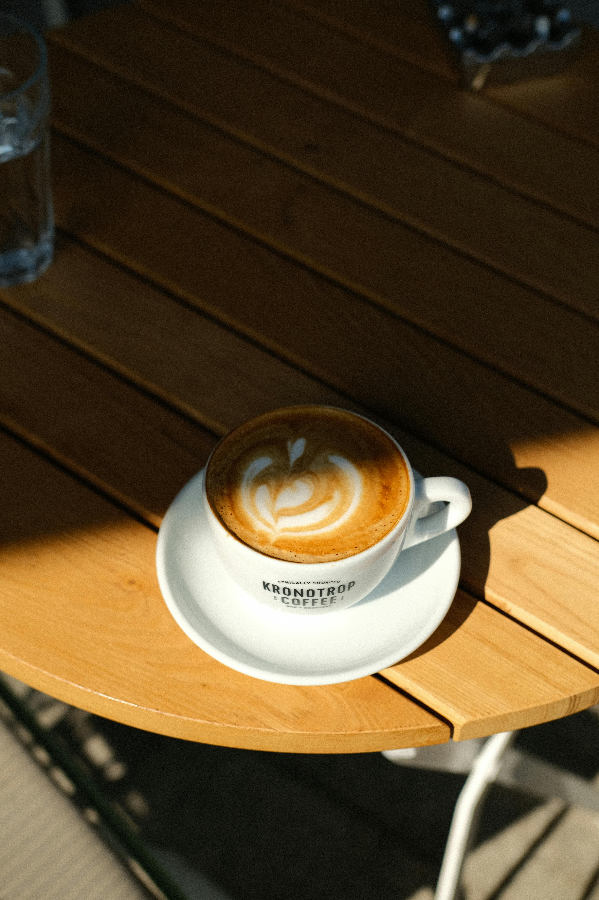
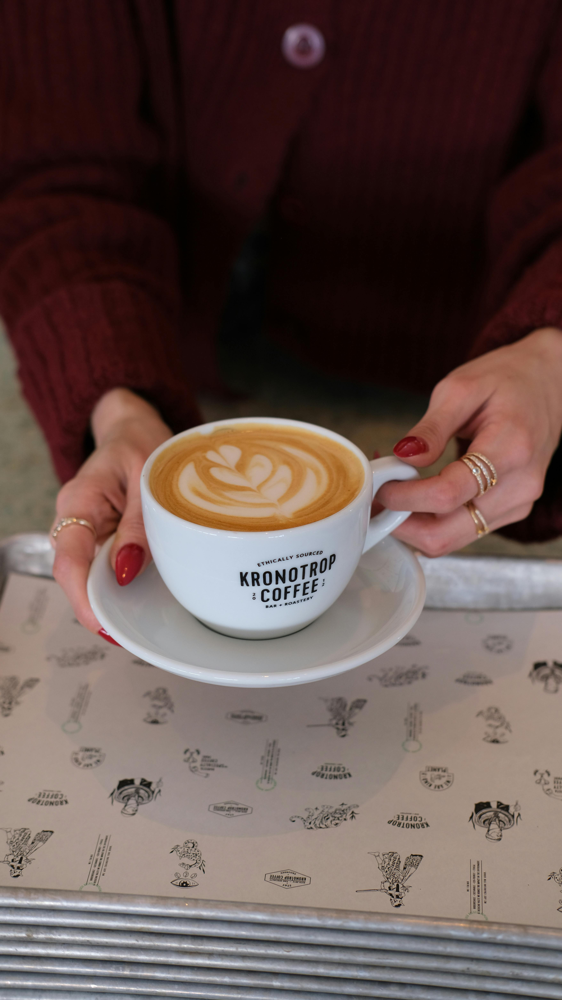
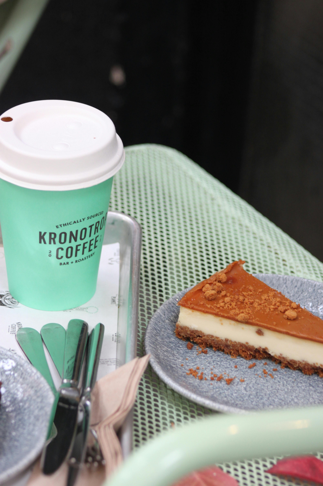

Et lunt sted for kaffe, små måltider og rolige øyeblikk. Her får gjesten raskt følelsen av stedet, ser hva som tilbys, finner åpningstider og kan ta kontakt uten å lete.
Denne demosiden viser hvordan en café kan presenteres på en varm, tydelig og profesjonell måte. Bildene skaper stemning, teksten gjør tilbudet lett å forstå, og kontaktinformasjonen er enkel å finne.
Store bilder og rolig tekst gir kunden følelsen av caféen før de kommer inn døren. Det bygger tillit og gjør stedet lettere å huske.

En god nettside handler ikke bare om informasjon. Den skal vise hvorfor folk skal velge akkurat dette stedet.

Meny, åpningstider, adresse og kontakt er samlet slik at gjesten raskt finner det de trenger.
En enkel meny gjør det lett for kunden å se hva caféen tilbyr. Dette kan tilpasses med ekte priser, kategorier og bilder.
Åpent hver dag
Mandag–fredag: 09:00–18:00
Lørdag–søndag: 10:00–17:00
Havnegata 12
6500 Kristiansund
Nær sentrum og havna
Bord, spørsmål eller samarbeid:
hei@kronotopcafe.no
+47 98 24 56 78
Denne siden kan tilpasses en ekte café, restaurant, bakeri eller liten butikk. RNS Studio kan legge inn ekte meny, åpningstider, bilder, kontaktinfo, kart, sosiale medier og eventuelt booking eller bestilling.
Tilbake til RNS Studio